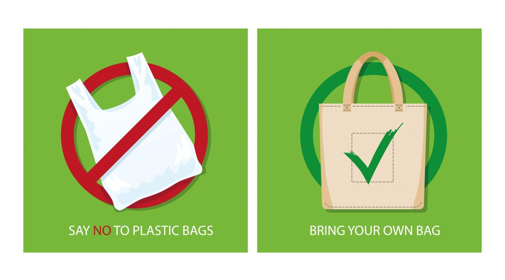
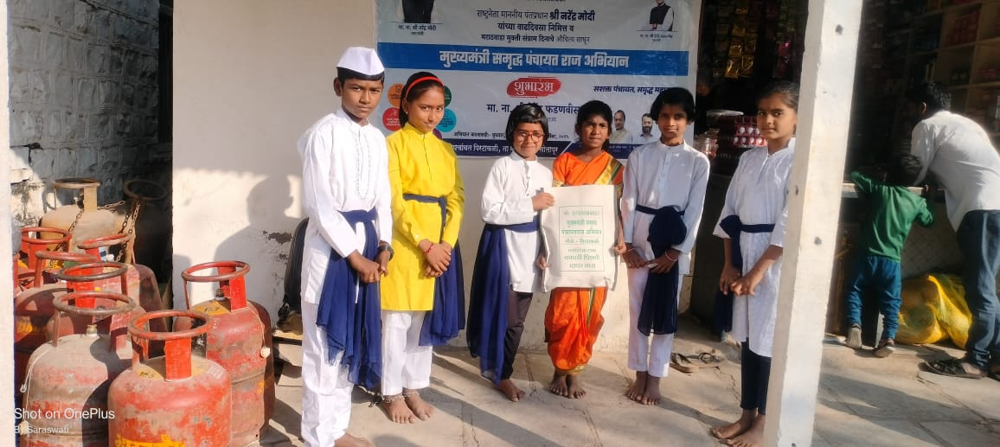

प्लास्टिक मुक्ती करता अभियान कालावधीत ग्रामपंचायतीने प्लास्टिक बंदीचा ठराव केला असून सिंगल युज प्लास्टिक संपूर्णतः वापर बंद करण्यात आलेला आहे. गावामध्ये सांडपाणी व घनकचरा व्यवस्थापन अंतर्गत प्लास्टिक कचरा संकलन केंद्र तयार केले असून त्याद्वारे प्लास्टिक बॉटल,कॅरीबॅग, सर्व प्रकारचे प्लास्टिक कचरा संकलित करून तो कचरा (plastic Reause) पुनर्वापर करणेसाठी दिला जातो.
प्लास्टिक कचरा कमी होण्याकरता ग्रामपंचायत स्तरावर ग्रामपंचायतीने गावातील प्रत्येक कुटुंबांना ज्यूट च्या कापडी पिशव्या वाटप केलेले आहेत. तसेच प्लास्टिक बंदी बाबत सर्व किरकोळ विक्रेते व दुकानदार यांना प्लास्टिक बंदी करणे बाबत सूचना पत्र देण्यात आले आहेत.
सदर ग्रामस्थ कडून या सूचनाचे नियमित पालन करून प्लास्टिक पूर्णतः बंद करण्यात आले आहे.

